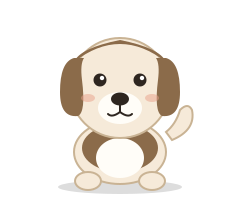
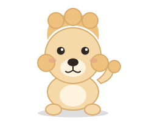

Beagle
Size: Small to medium (10-15 kg).
Personality: Curious, friendly, and full of energy.
Care: Needs daily walks and a secure yard, because it loves following its nose.
Welcome! Learn about three popular dog breeds before you adopt your own virtual friend.

Size: Small to medium (10-15 kg).
Personality: Curious, friendly, and full of energy.
Care: Needs daily walks and a secure yard, because it loves following its nose.
Size: Large (25-34 kg).
Personality: Gentle, loyal, and eager to please.
Care: Needs plenty of exercise and weekly brushing for its thick coat.

Size: Standard, miniature, or toy.
Personality: Very smart, alert, and playful.
Care: Needs regular grooming and mental games to stay happy.